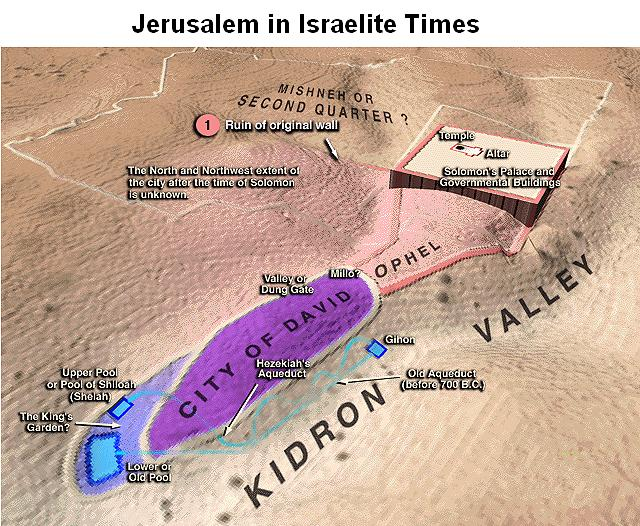

http://biblelight.net
The Pool of Siloam
2 Ki 18:17 And the king of Assyria sent Tartan and Rabsaris and Rabshakeh from Lachish to king Hezekiah with a great host against Jerusalem. And they went up and came to Jerusalem. And when they were come up, they came and stood by the conduit of the upper pool, which is in the highway of the fuller's field.
2 Ki 20:20 And the rest of the acts of Hezekiah, and all his might, and how he made a pool, and a conduit, and brought water into the city, are they not written in the book of the chronicles of the kings of Judah?
2 Chr 32:30 This same Hezekiah also stopped the upper watercourse of Gihon, and brought it straight down to the west side of the city of David. And Hezekiah prospered in all his works.
Neh 3:15 But the gate of the fountain repaired Shallun the son of Colhozeh, the ruler of part of Mizpah; he built it, and covered it, and set up the doors thereof, the locks thereof, and the bars thereof, and the wall of the pool of Siloah by the king's garden, and unto the stairs that go down from the city of David.
Isa 7:3 Then said the LORD unto Isaiah, Go forth now to meet Ahaz, thou, and Shearjashub thy son, at the end of the conduit of the upper pool in the highway of the fuller's field;
Isa 8:6 Forasmuch as this people refuseth the waters of Shiloah that go softly, and rejoice in Rezin and Remaliah's son;
Isa 8:7 Now therefore, behold, the Lord bringeth up upon them the waters of the river, strong and many, even the king of Assyria, and all his glory: and he shall come up over all his channels, and go over all his banks:Isa 22:9 Ye have seen also the breaches of the city of David, that they are many: and ye gathered together the waters of the lower pool.
Isa 22:10 And ye have numbered the houses of Jerusalem, and the houses have ye broken down to fortify the wall.
Isa 22:11 Ye made also a ditch between the two walls for the water of the old pool: but ye have not looked unto the maker thereof, neither had respect unto him that fashioned it long ago.Isa 36:2 And the king of Assyria sent Rabshakeh from Lachish to Jerusalem unto king Hezekiah with a great army. And he stood by the conduit of the upper pool in the highway of the fuller's field.
John 9:7 And said unto him, Go, wash in the pool of Siloam, (which is by interpretation, Sent.) He went his way therefore, and washed, and came seeing.
John 9:8 The neighbours therefore, and they which before had seen him that he was blind, said, Is not this he that sat and begged?
John 9:9 Some said, This is he: others said, He is like him: but he said, I am he.
John 9:10 Therefore said they unto him, How were thine eyes opened?
John 9:11 He answered and said, A man that is called Jesus made clay, and anointed mine eyes, and said unto me, Go to the pool of Siloam, and wash: and I went and washed, and I received sight.
Illustration from the SDA Bible Commentary, CD Version 1.0
|
http://biblelight.net |